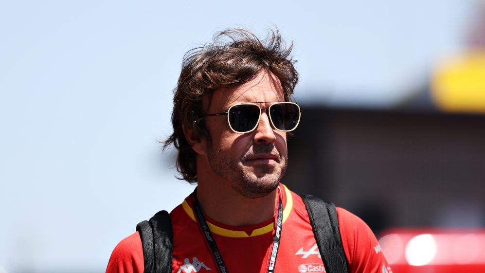

Fernando Alonso is readying himself for his 19th Spanish Grand Prix. And the veteran Alpine driver is evidently excited to race in front of his capacity home crowd – the two-time champion hoping for a smooth weekend and his first points since the season opener. Alonso made his F1 debut for Minardi in 2001 and has since competed in 18 home Grands Prix, having won here for Ferrari in 2013 – something compatriot Carlos Sainz hopes to emulate on Sunday. And with a huge crowd expected throughout the three days of action, the Spaniard is hoping to experience the same incredible atmosphere at Barcelona.
“At the moment we have been quite fast on Friday and Saturday but on Sunday for different reasons – our own mistakes, reliability, bad luck, whatever – we didn’t score as many points as we wanted. So, we want to change [that] this year from Barcelona and have a good run with consecutive points in races in the points from now on." He may be hoping for the same energy from his home fans, but Alonso has noticed a shift in excitement around F1 Grands Prix – and not just at his home race – compared to his first seasons in the sport.